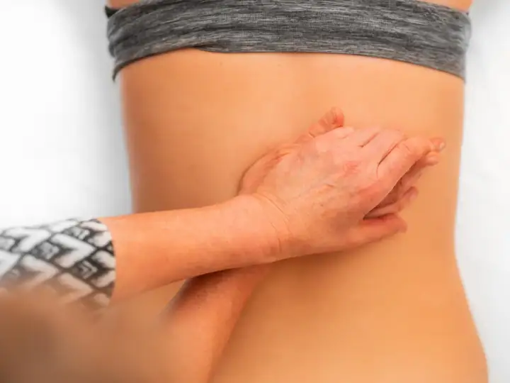
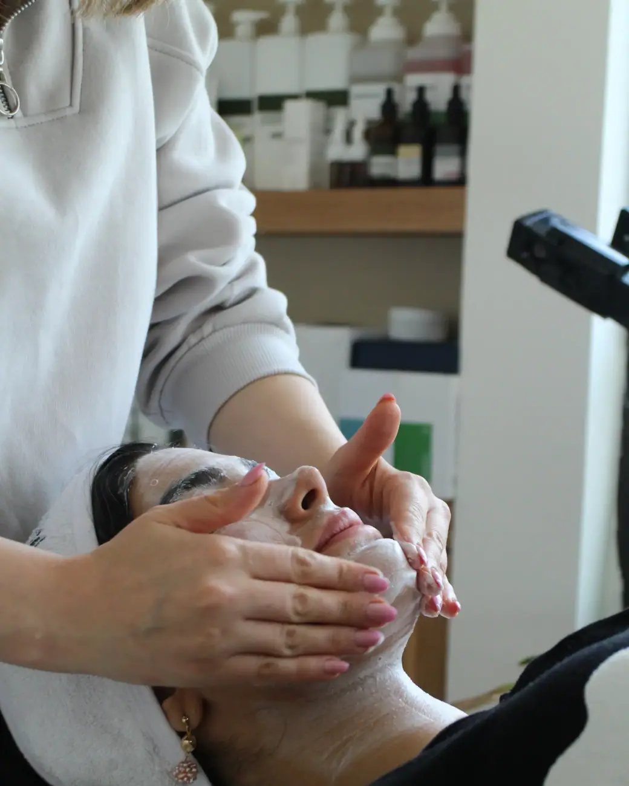

01
Pós-operatório
Drenagem e cuidados após cirurgia plástica, seguindo a orientação do seu cirurgião.
Agendar avaliaçãoEstética corporal e facial no Centro · Itapecerica da Serra
Pós-operatório, drenagem, tratamentos corporais e limpeza de pele com a Paula, que indica o procedimento certo para cada caso.

Atendimento até 22h
Escolha o procedimento e fale direto com a Paula Tabata Estética. A mensagem já vai pronta no WhatsApp.

Drenagem e cuidados após cirurgia plástica, seguindo a orientação do seu cirurgião.
Agendar avaliação
Massagem que ajuda a reduzir o inchaço e a retenção de líquido, com sensação de leveza.
Agendar avaliação
Protocolos para gordura localizada, flacidez e celulite, combinados de acordo com a sua avaliação.
Agendar avaliação
Higienização profunda, extração e hidratação para a pele respirar, com o protocolo certo para o seu tipo de pele.
Agendar avaliaçãoA Paula explica tudo com calma e indica os procedimentos específicos para o seu caso, por isso os resultados aparecem. Atende de manhã cedo até a noite.
Primeiro a avaliação, depois o plano. Você entende cada etapa antes de começar.
Conte o que você quer melhorar. A equipe responde, tira as primeiras dúvidas e marca o melhor horário.
A profissional avalia sua pele ou seu corpo, explica as opções e monta um plano com as sessões indicadas.
Você decide com calma e é acompanhada em cada sessão, com orientações para cuidar em casa.
Segunda a sexta: 07h–22h · Sábado: 07h–12h
Avaliações reais de clientes publicadas no Google Maps.
“Gente vcs não tem noção da pessoa que é a Paula, cheguei no centro estético com várias fibroses e desesperada, mas ela com esse jeitinho me tranquilizou, e hoje não largo ela por nada! Uma excelente profissional, super indico!”
“A Paulinha é extremamente atenciosa com seus clientes, na avaliação ela indica os procedimentos específicos para cada caso e por isso da muito resultado!”
“Super atenciosa, nunca vi uma avaliação tão completa, ela explica tudo com toda a paciência do mundo.”
“Nota 1000. Desde o primeiro contato até após o atendimento. Qualidade, preço justo e profissional atualizada, super humana e uma energia maravilhosa!! Vale muito a pena!!!”
“Minha experiência foi excelente, atendimento de altíssima qualidade, espaço muito confortável e limpo. A esteticista é uma fofa, muito atenciosa e cuidadosa, gosta muito do que faz super indico .”
Não achou sua dúvida? Pergunte direto para a equipe no WhatsApp.
A Paula Tabata Estética fica na Av. Quinze de Novembro, 605, Centro, em Itapecerica da Serra (SP), CEP 06850-010. Pelo botão "Traçar rota" nesta página você abre o caminho direto no Google Maps.
A Paula Tabata Estética atende segunda a sexta, das 07h às 22h; sábado, das 07h às 12h. Aos domingos fica fechada. O agendamento é feito pelo WhatsApp.
É só chamar no WhatsApp (11) 94368-5163 pelo botão "Agendar avaliação". A equipe responde, tira suas dúvidas e marca o melhor horário para a sua avaliação.
Pós-operatório, Drenagem linfática, Tratamentos corporais e limpeza de pele. O procedimento indicado para você é definido na avaliação.
Quando o seu cirurgião liberar, o que costuma acontecer nos primeiros dias após o procedimento. O protocolo segue a orientação médica.
Depende do objetivo. Para inchaço e retenção, costuma-se começar com uma série de sessões semanais. A profissional indica a frequência na avaliação.
Para a maioria das pessoas, uma vez por mês. Peles oleosas ou com acne podem precisar de um intervalo menor, o que é definido na avaliação.
Agende sua avaliação na Paula Tabata Estética em poucos minutos pelo WhatsApp.